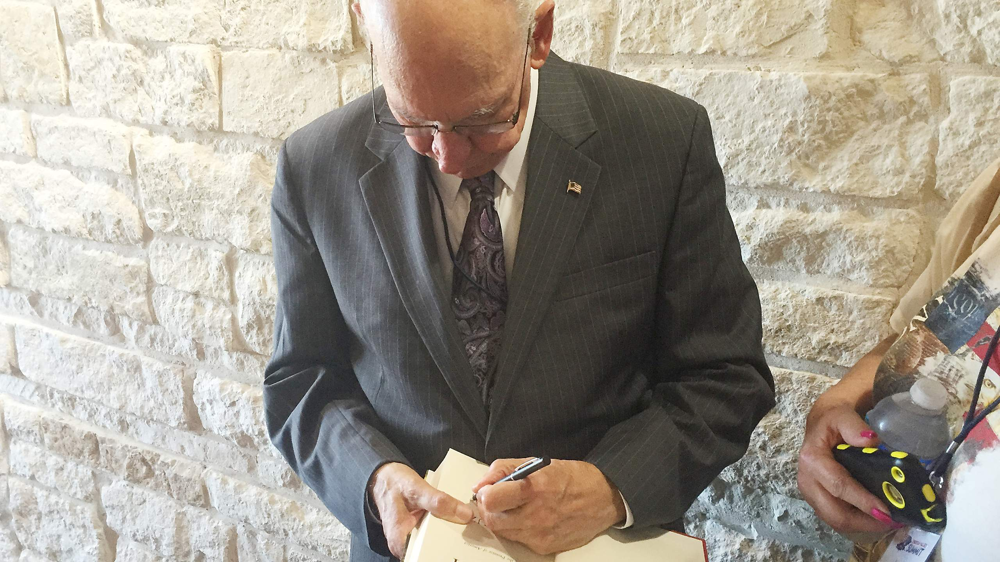

For evangelical voters, Rafael Cruz may be Ted’s best apostle
Rafael Cruz, father to Ted, is writing a book.
It will be about how America was founded as a Christian nation. About how the Declaration of Independence and the Constitution are the word of God. About how America lost its way a half century ago when the Supreme Court banned prayer in school and tossed the Bible from classrooms, ushering in an era of declining morals and rising crime.
About how churches, cowed by a misunderstanding of separation of church and state, and to their enduring moral shame, acquiesced. About how it’s time for pastors — and Christians generally – to assert their influence in every aspect of American life, in arts and entertainment, media, business and most especially government.
The book, to be published in December by conservative press WND Books, will bear a simple title: “A Time to Act.”
If that sounds familiar, it ought to. U.S. Sen. Ted Cruz’s best-selling book, “A Time for Truth,” was published in June. Subtitled “Reigniting the Promise of America,” it provides the rationale for his candidacy for president.
Rafael Cruz’s book will echo as its strategic sequel, perfectly timed to boost his son’s standing with evangelical voters, especially in Iowa, on whose good graces his candidacy hinges.
And who better to write the sequel than Rafael Cruz, who, after all, is also author of the prequel – which, of course, is Ted Cruz himself – inscribing his son with a kind of fundamentalist faith in the Constitution as holy writ.
“There are many people that think, ‘Oh, the Constitution, the Declaration of Independence are secular documents.’ Nothing could be further from the truth. The Bible was the foundation of those documents,” Rafael Cruz said. “As a matter of fact, they cite the Bible more than anything else, and so Christianity was totally intertwined with the Revolutionary War.”
Ted Cruz celebrates with his father, Rafael Cruz, after winning a runoff for the Republican Senate nomination in Houston in July 2012. Photo by Michael Stravato/The New York Times
It is mid-July and Cruz, 76, is sitting at a corner table at the Hilton Garden Inn, next door to the lakeside Granbury Resort Conference Center where a Christian Values Summit is about to get underway in this picturesque town 60 miles southwest of his home in the Dallas suburb of Carrollton, where 12 years ago the elder Cruz was ordained a non-denominational pastor.
He doesn’t have a church. That was not his calling, he said. Rather, he has emerged as a kind of a circuit-riding preacher and, since its emergence in 2009, a cult figure to the tea party movement, even before his son’s election to the Senate, when he logged 37,000 miles as Ted Cruz’s chief surrogate, a role he is now reprising on the national stage.
“I have already flown over 50,000 miles this year — that’s just on American. I’m platinum. I will make executive platinum this year,” Cruz said. “The last two years, I’ve done almost 75 pastors’ conferences, almost one a week. All over the country. On the campaign I speak at tea party meetings. I speak at 9/12 meetings. I speak at Republican Party women’s clubs, at Republican clubs. I speak at a lot of home school meetings.”
His refrain as he rushes from pillar to post is borrowed from his favorite movie, “My Fair Lady”: “Get me to the church on time.”
“He is booked like a rock star,” said David Barton, the prominent evangelical author and activist from Aledo who, as he has often in the past, shared the bill with Cruz in Granbury. “His road schedule is unbelievable, and he happens to have a son running for president.”
“I think Rafael would probably log 100,000 miles even if Ted wasn’t running,” Barton said. “It’s adrenaline to him.”
“Actually I get energized by it, I really get energized by it,” Cruz said. “I almost feel guilty if I’m sitting at home. I just feel an urgency to share with people.”
Rafael Cruz, father of U.S. Sen. Ted Cruz speaks at a tea party meeting at the West Waco Library & Genealogy Center in April 2014. Photo by Deborah Cannon/American-Statesman
In Granbury, Cruz adds a few hundred to the tally of 10,000 to 15,000 pastors he calculates he has addressed, delivering his PowerPoint, “Reclaiming America: Why pastors (and Christians in general) need to be involved in the political arena,” and, as always, concluding by asking everyone to stand and to repeat after him, pledging their “sacred honor to do what we can to restore righteousness in America … to make America, once again, that shining city on the hill” – to borrow Ronald Reagan’s borrowing of the Puritan John Winthrop – “so help me God.”
His message strongly echoes Barton, a prolific writer whose revisionist view of American history is distinctly out of step with most mainstream scholarship but occupies a sweet spot in Republican Party politics.
There may be no apt analog in the annals of presidential politics to Rafael and Ted Cruz’s father-son tandem. In the age of the super PAC, he is the super pop.
“There’s a relationship there that’s unlike any in American history to my knowledge. We’ve just never seen anything remotely like this,” said Frederick Clarkson, senior fellow for religious liberty with Political Research Associates, a progressive think tank based in Somerville, Mass., and the author of “Eternal Hostility: The Struggle Between Theocracy and Democracy.”
Joseph P. Kennedy certainly used his money and influence to help elect his son, John, president. It is unlikely that George W. Bush would have ever been elected president had his father not first held the office.
But neither was as importantly or indefatigably involved in directly selling his son to the American people, or as intimately involved in forging the ideology of his son as Rafael Cruz.
“I believe Ted Cruz is probably the first presidential candidate of any plausibility to have been specifically groomed to be the Christian right candidate for president,” Clarkson said. “That is what his father wanted him to be. And it goes back to his earliest days.”
“Rafael came to the United States a legal immigrant who was tortured by the Batista regime in Cuba, arrived (in Austin) virtually penniless, didn’t speak any English, and in one generation his son is a credible candidate for president of the United States. It is a remarkable American story,” said Rick Tyler, national spokesman for the Cruz campaign. “We view him as a great asset, and we have not tried to change anything about his message.”
Ted Cruz's father Rafael Cruz signs an autograph for a fan at a recent July event in Granbury. Jonathan Tilove/American-Statesman
‘God has destined you for greatness’
Ted and Rafael Cruz came of age politically together.
“It was 1980, Ted is 9 years old,” Rafael Cruz recalled for the American-Statesman. “Our conversation around the dinner table centered on politics every day, why we had to get rid of this leftist progressive Jimmy Carter and replace him with a constitutional conservative like Ronald Reagan. So my son got a dose of conservative politics from a Christian worldview when he was 9 years old for a whole year and, I mean, he actually was mesmerized watching Ronald Reagan speak.”
While a newcomer to politics, Rafael Cruz was not a mere spectator to history.
Living in Houston, Cruz, who with his then-wife Eleanor owned a seismic data software company that served the oil industry, joined a new Christian right organization, the Religious Roundtable, and was named to its Texas board.
“I was invited to a meeting of the national board of Religious Roundtable in Washington, D.C.,” he said. “On the board at the time were people like Paul Weyrich, Gary Bauer, Phyllis Schlafly” — luminaries of the religious right.
When Reagan came to speak before the roundtable’s National Affairs Briefing — 15,000 strong — in Dallas in August 1980, it was a watershed moment.
For the half-century since the Scopes Trial and the repeal of Prohibition, fundamentalist Christians had retreated from the public square, more intent on Jesus’ return than election returns.
But that era ended with the thundering reception that day for Reagan’s welcome declaration to Christian leaders, “I know you can’t endorse me. But I want you to know that I endorse you and what you are doing.”
Video published by www.tedcruz.org
(Curiously, Cruz could not vote for Reagan. While he became a Canadian citizen during the few years he lived there — it is where Ted Cruz was born — he did not become a U.S. citizen until 2005. Asked about that, he said, “I wish I’d done it before. I don’t have a good excuse. Sometimes you just put things off.”)
“Talk to me about your son and his rise. This must be a thing of God. It’s meteoric,” David Brody, chief political correspondent for the Christian Broadcasting Network, asked Rafael Cruz in an interview in 2013, Ted Cruz’s first year in the Senate.
“Yes, but you know something, it is not something that started a couple of years ago,” Cruz replied. “When he was 4 I used to read Bible stories to him all the time. And I would declare and proclaim the word of God over him. And I would just say, ‘You know, Ted, you have been gifted above any man that I know, and God has destined you for greatness.’ And I started making declarations about the word of God to him every day.”
“So this is not a trajectory of three years,” Cruz told Brody. “This is a trajectory of 30 years.”
U.S. Sen. Ted Cruz speaks at Gov.-elect Greg Abbott's election night party at ACL Live at the Moody Theater on Nov. 4, 2014. Photo by Jay Janner/American-Statesman
Cruz picked up the story in Granbury.
“As Ted was entering high school, 13 years old, through a client of mine, we were introduced to Rolland Storey, president of the Free Enterprise Institute (it was then called the Free Enterprise Education Center),” he said. “So they had Ted reading Adam Smith and John Locke and (Ludwig) von Mises, and (Friedrich) Hayek and (Frédéric) Bastiat and Montesquieu, and the Federalist Papers and the Anti-Federalist Papers and Milton Friedman,” exposing him to thinking on questions of liberty and free markets.
“They created a group of five kids,” Cruz said. “They called them the Constitutional Corroborators. Ted was one of the five. They hired a memory expert, and they taught these five kids how to memorize the Constitution. They used what they called the mnemonic devices where these kids would memorize a string of letters and from the letters they would recreate the texts.”
“So all during high school for the next four years, these kids would go, say, into a Rotary Club at lunchtime. They would put five easels in the front of the room, and while the people were having lunch these kids would write the Constitution by memory on these easels and then they would give a half-hour patriotic speech on free market economics and the Constitution,” Cruz said.
“During those four years, Ted did approximately 80 speeches on free market economics and the Constitution, so before he left high school he was passionate about the Constitution, about the declaration, about free markets, about limited government, about the rule of law, and that passion became like fire in his bones,” Cruz said.
“There’s not many folks I know of who have done that in my lifetime,” Barton said. “So why does Ted do it? I think the answer is seen in Rafael, in Rafael’s passion, what Rafael experienced.”
In his book, Ted Cruz describes his acceptance at Princeton as a “dream come true.” After graduating with honors, he earned a law degree with high honors from Harvard.
“It’s an extraordinary thing for someone coming out of that background to go to Harvard and Princeton in the way that he went to Harvard and Princeton, going into what they viewed as the turf of the enemy to get the most elite kind of education,” Clarkson said. “You go there and you excel and you come out of it, if your mission in life as a Christian is to overcome the satanic stronghold, you have to be able to enter them and to prevail.”
And prevail he did.
“There’s a reason they’ve got an award at the Princeton debate club named for Ted Cruz,” Barton said.
Even after Princeton, Rafael Cruz said, “When he told me he was going to go to Harvard (Law School), I said, ‘Ted, Harvard is the pit of liberalism. Can you handle it?’ And he looked me in the eye and said, ‘Dad, I can handle it.’”
Texas state Senate candidate Konni Burton, center, stands with Rafael Cruz, left, and his son U.S. Sen. Ted Cruz during a Burton campaign event in Fort Worth in March 2014. Photo by Ron T. Ennis/Fort Worth Star-Telegram/MCT
‘America was founded as a Christian country’
One doesn’t immediately see Ted in Rafael. The lines of the old man’s face are softer, his voice deeper, his accented locution more elegant than the rat-tat-tat of his son, he of the Supreme Court bar.
But when they get going, there is a fluid emotional bond.
“The most common comment I get is, ‘I see where Ted gets his passion from,’” Rafael Cruz said. “We both speak in a very passionate manner.”
Both are crowd-pleasers.
When Rafael Cruz finished preaching to a tea party group in Waco last year, an appreciative voice rang out from the back of the hall, “I will say, if that didn’t fire you up, your wood’s wet.”
In his book, Ted Cruz writes with pride about how his father was a teenage guerrilla in Cuba, throwing Molotov cocktails in support of a movement being led by Fidel Castro, “whose own capacity for tyranny and terror was not yet known.” Cruz has used his father’s example to incite young people to become “arsonists” for liberty.
“It was a sign of the times. I was in a revolution,” Rafael Cruz said. Now, he said, “There are ways of throwing bombs verbally also.”
“The very first time I laid eyes on Rafael Cruz was the very first tea party gathering at Dallas City Hall in 2009, and I was standing there listening to people speak and it was getting really dull, and then this old guy comes up and he talks about how he grew up in Cuba and how much Obama is like Fidel,” said Jan Shedd, who is with the Kaufman County Tea Party. “He was fantastic.”
“I love him to death,” Shedd said. “A lot of us who do this work are appalled at Christian apathy. People are too timid, too quiet, too passive, too sheepish. They buy into this, ‘You know, Jesus wasn’t political.’ In my opinion, the reason politics is so dirty is because God’s people stay so far away from it.”
“Unfortunately,” Cruz said in Granbury, “many people in America are unaware of how intertwined Christianity and the American Revolution were.”
Video published by www.theFamilyLeader.com
“Fire from the pulpit was the spark for the Revolution,” he said. “In fact, David Barton often says that you can consider the Declaration of Independence like a series of sermon summaries because every one of those challenges — you know, challenging the King of England — were preached from the pulpits. It was preachers calling out King George for the atrocities that the British were perpetrating on the American people.”
Cruz believes Jefferson’s description of a “wall of separation between church and state” in his letter, as president, to the Danbury Baptists, has been widely misunderstood and misapplied.
“It’s absolutely obvious that Jefferson is only talking about a one-way wall, a wall to prevent government from establishing a state religion, a one-way wall to keep government from interfering with the free exercise of religion,” Cruz said. “But I don’t think that we can infer that Jefferson is saying that people of faith shouldn’t have an influence in every area of society.”
Nonetheless, he said, Christian clergy were gulled into thinking otherwise and capitulated, scurrying from the public square.
Look at the Book of Acts, Cruz said. The first deacons were instructed to “serve tables — that was to feed the poor. The church acquiesced and handed it down to government. How’s that working out?”
“Then in the Book of James it says that pure and undefiled religion is to take care of the widows and orphans,” he said. “That’s welfare. It was the responsibility of the church. The church basically again acquiesced, handed it down to government. How’s that working out?”
Most profoundly, Cruz said, “Prior to 1962, everybody prayed before school started. In 1962, the Supreme Court banned prayer. In 1963, they banned the Bible from school. Prior to that, the Bible was the principal textbook in all schools.
“The church remained silent, and their excuse — it’s a political issue,” Cruz said. “Now it’s very interesting. If you look at statistics, at the consequence of removing prayer and Bible reading from schools. Number one, teen pregnancy dramatically increased after 1963. You have to figure there is a correlation. The other thing that increased after 1963 was violent crime. Ten years later, abortion was legalized.”
He blames the deceptively positive-sounding concept of “social justice,” a “collectivist” concept straight out of Karl Marx, for fostering a culture of victimhood and dependency that, he said, “kills the American dream.”
“The question is how long is the churchgoing public to remain silent? Because, you see, the challenge is the church should be a moral compass,” Cruz said. “I mean, historically faith has been foundational to what America is. America was founded as a Christian country.”
“Both Barton and Cruz are adept at mythologizing American history and using faith as a weapon to promote their own political agendas. They are equally shameless about that, but probably Rafael Cruz is a bit more incendiary about it than Barton is,” said Dan Quinn, spokesman for the Texas Freedom Network, a grassroots, liberal watchdog group in Austin that monitors the religious right in Texas. “I have no doubt that Barton and Cruz would be very comfortable in an America that bases all of its public policy on a fundamentalist reading of the Bible.”
Barton said that kind of criticism goes with the territory.
“He is going to get attacked; there’s no question that I have serious critics that spend a lot of bucks to go after us,” Barton said. “There’s also no question the polling is moving in the direction we’ve been pointing to for a number of years.”
The so-called wall of separation between church and state, he said, is increasingly viewed as a “tiresome metaphor.”
U.S. Sen. Ted Cruz arrives on Capitol Hill in Washington on Wednesday to preside over the subcommittee's hearing where Internal Revenue Service Commissioner John Koskinen testified on IRS targeting, focusing on the progress of agency reforms and congressional options. Photo by Andrew Harnik/AP
‘We are not talking about theocracy’
Evangelicals are crucial to Ted Cruz’s electoral chances. To win he must become their preferred candidate, beginning in Iowa, where evangelical Christians will constitute as many as 6 in 10 caucusgoers.
“I see Rafael Cruz just being a real asset for his son because it gives everyone a glimpse into how Ted was raised, what the leadership was like in his home,” said Bob Vander Plaats, who, as head of the Family Leader, is a key figure in evangelical politics in Iowa.
But Daniel Williams, a historian of religion and politics at the University of West Georgia, wonders whether Rafael Cruz’s old-school focus on issues like prayer in school is frozen in time at the moment of his political awakening.
“Starting in the 1990s there was a shift in rhetoric of the Christian right, a shift toward viewing themselves as a religious minority in America that would not necessarily take power but would seek to preserve its own rights,” said Williams, who in 2010 wrote “God’s Own Party: The Making of the Christian Right.”
“Rafael Cruz is still saying those things that were very common 35 years ago but not very common today. That’s why they seem strange to some people,” Williams said. “To me, I think Rafael Cruz would have played much better in 1980 than he would today.”
But Rafael Cruz is not a standalone character.
“If you believe as Rafael and many others do, from quite a theological range, that God intervenes and punishes individuals and whole nations, if America was the chosen nation and is supposed to rise and be the Christian nation, then if it is failing that, if it’s legalizing abortion, legalizing gay marriage and throwing prayer out of the schools and all the awful things America has done, then to get right with God is going to require somebody like Ted Cruz to make things right, and I would be very certain that Ted would see it that way too,” Clarkson said. “But unlike anyone we’ve seen before, he is an effective politician. He is a very smart and carefully spoken man.”
Rafael Cruz, on the other hand, “is an overt theocrat,” Clarkson said.
There is, for example, Cruz’s Aug. 26, 2012, sermon, posted online, at New Beginnings, a mega church in Irving, led by pastor Larry Huch, a Christian Zionist, in which Cruz speaks at great length using the Biblical language of Dominion Theology, which Clarkson said is a rising tendency on the religious right that seeks not just a role in government, but dominion.
Cruz bristles when asked about that sermon.
“That’s a misquote because I was reading a verse of scripture and the verse of scripture uses the word ‘dominion,’” Cruz said. “What I meant by saying that is that we should be having an influence on every area of society, and so should every member of society. This is not something I’m saying exclusively to Christians. I mean, if you have a worldview, aren’t you going to try to share that worldview with others? Because we’re not called to be hermits, because none of us wants to be hermits living in a cave.”
“We are not talking about theocracy,” Cruz said. “We’re talking about the foundational principles that are the basis for the Constitution, and those foundational principles we find in the word of God. This is what I call a Judeo-Christian ethic, and what is that? Well, first of all it is a moral code of conduct, and then it’s honesty, integrity, individual responsibility, the rule of law, free enterprise, limited government.”